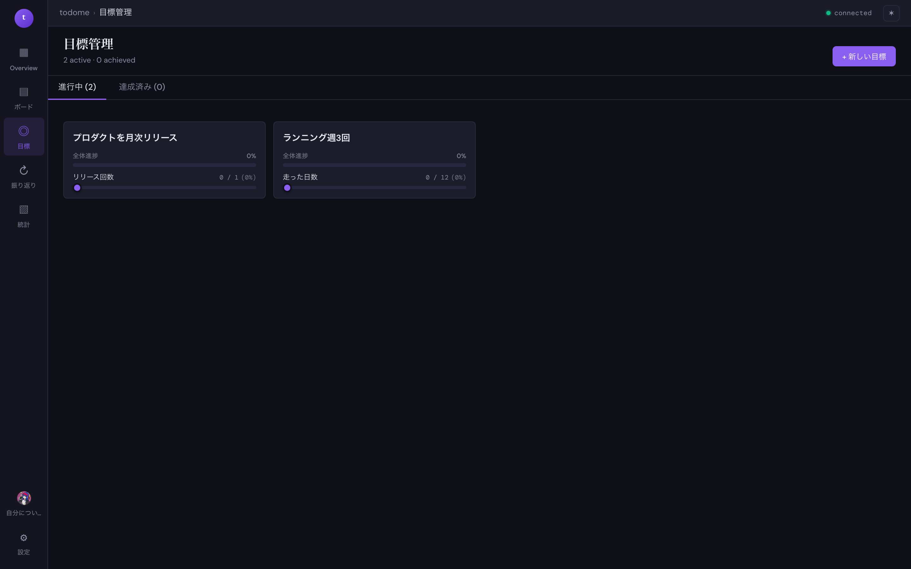

目標
達成したいゴールを定量的な KPI とともに登録します。 各目標はボード上のタスクと紐付けられ、進捗は自動集計されます。

画面の見方
| 進行中 / 達成済み タブ | まだ達成していない目標と、すべての KPI を達成した目標を切り替えて表示します。 |
|---|---|
| + 新しい目標 | 右上のボタンから目標作成モーダルを開きます。 |
| 目標カード | 各目標は全体進捗バーと、複数 KPI の進捗バーで構成されます。 カードクリックで編集モーダルが開きます。 |
主な操作
目標を追加する
- 右上の + 新しい目標 をクリック
- 目標名を入力（絵文字アイコンも選択可）
- KPI 名と目標値を入力（単位は 数値 / パーセント から選択）
- 複数 KPI を追加する場合は「+ KPI を追加」
- 「保存」で確定
KPI の進捗を更新する
目標カード内の KPI スライダーをドラッグするか、カードを開いて現在値を直接入力することで進捗を更新できます。 ボード上のタスクで目標を選択して作業時間を記録すると、紐付いた目標の時間集計が自動的に積み上がります。
GitHub リポジトリを紐付ける
目標編集モーダルでリポジトリ名を owner/repo 形式で指定すると、GitHub 連携時にコミット数・PR 数などを KPI として自動反映できます。
利用には「設定」画面での GitHub 認証が必要です。
ヒント:
目標を達成するとカードは自動で「達成済み」タブに移動します。
AI に「今月の目標を提案して」と伝えると、プロフィール情報を踏まえて具体案を返してくれます。